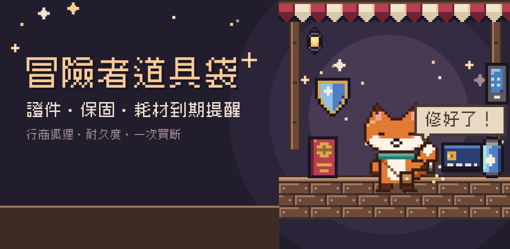
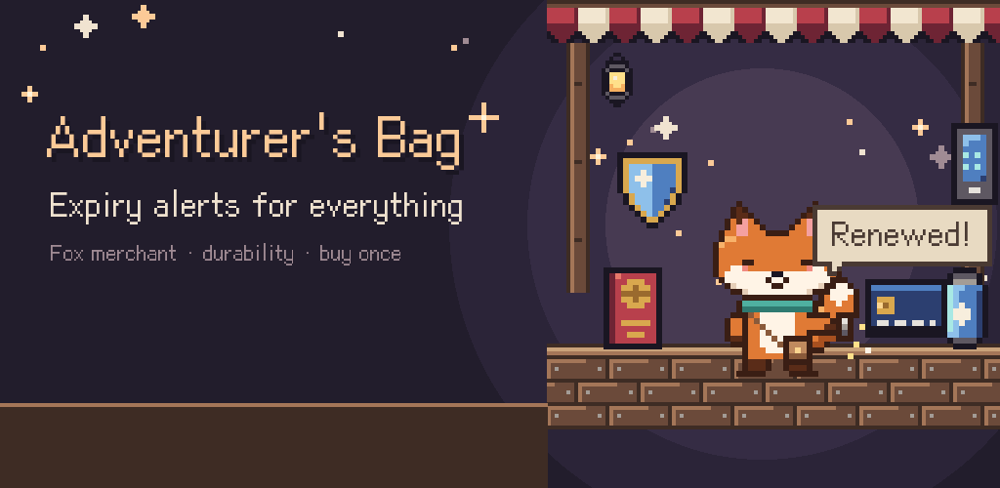
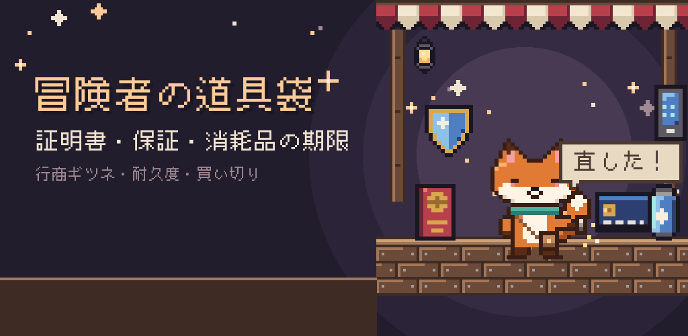

冒險者道具袋 Adventurer's Bag
像素風到期提醒・Pixel expiry reminder

把證件、保固、耗材、疫苗、保單收進道具袋，行商狐狸會記住每一樣的期限，在到期前提醒你。不用帳號、資料只存在你的手機、一次買斷沒有訂閱。
聯絡我們
遇到問題或有建議，請到 這裡回報（需要 GitHub 帳號）。我們會盡快回覆。
常見問題
- 換手機時資料怎麼搬？
- 舊手機：設定 → 備份與換手機 → 複製備份碼，傳給自己。新手機：貼上備份碼 → 還原。
- 解鎖之後換手機，還要再買一次嗎？
- 不用。在新手機打開 設定 → 道具袋解鎖 → 恢復購買（要用同一個 Apple ID／Google 帳號）。
- 沒有收到到期提醒？
- 請確認系統設定裡允許「冒險者道具袋」傳送通知，並在 App 的設定頁打開到期提醒。部分 Android 手機的省電功能會擋掉通知，請把這個 App 設成「不限制」。另外，iPhone 最多只能預先排好 64 則通知；很久沒打開 App 時，最後一則會提醒你打開一下，之後的提醒才會繼續。
- 預填的週期準確嗎？
- 濾心、定檢、疫苗等預填的週期只是常見建議，請依實際規定、產品說明或醫師指示修改。
- 需要輸入證件號碼嗎？
- 不需要，也不建議。只要名稱和日期就夠了。
- 你們會收集我的資料嗎？
- 不會。所有資料只存在你的裝置上，請見 隱私權政策。

Stow your documents, warranties, supplies, vaccines and policies in the bag, and Foxy the traveling merchant remembers every date and reminds you before it runs out. No account, your data stays on your phone, buy once with no subscription.
Contact
Found a problem or have an idea? Please report it here (GitHub account required). We'll get back to you as soon as we can.
FAQ
- How do I move my data to a new phone?
- Old phone: Settings → Backup & new phone → Copy backup code, and send it to yourself. New phone: paste the code → Restore.
- Do I need to buy the full version again on a new phone?
- No. On the new phone open Settings → Unlock → Restore purchase (use the same Apple ID / Google account).
- I'm not getting expiry reminders.
- Make sure notifications for Adventurer's Bag are allowed in your system settings and reminders are on in the app's settings. Some Android phones block notifications to save battery; set this app to "unrestricted". Also, an iPhone can only hold 64 scheduled notifications; if you haven't opened the app for a long time, the last one reminds you to open it so later reminders keep coming.
- Are the pre-filled intervals accurate?
- Intervals for filters, inspections, vaccines and so on are common suggestions. Adjust them to the actual rules, product manuals or your doctor's advice.
- Do I need to enter ID numbers?
- No, and we recommend you don't. A name and a date are all it needs.
- Do you collect my data?
- No. Everything stays on your device. See the privacy policy.

証明書、保証書、消耗品、ワクチン、保険を道具袋に入れると、行商ギツネが期限を覚えて、切れる前にお知らせします。アカウント不要、データは端末の中だけ、サブスクなしの買い切りです。
お問い合わせ
不具合やご要望は こちらからご報告ください（GitHub アカウントが必要です）。
よくある質問
- 機種変更のとき、データはどう移しますか？
- 古い端末：設定 → バックアップと機種変更 → バックアップコードをコピーして自分に送る。新しい端末：貼り付けて復元。
- 機種変更したら、製品版をもう一度買う必要がありますか？
- いいえ。新しい端末で 設定 → 道具袋の解除 → 購入を復元（同じ Apple ID／Google アカウントで）。
- 期限のお知らせが届きません。
- 端末の設定で通知が許可されているか、アプリの設定でお知らせがオンになっているか確認してください。一部の Android 端末は省電力機能で通知を止めるので、このアプリを「制限なし」にしてください。iPhone は予約できる通知が 64 件までなので、長い間アプリを開かないと、最後の通知で「開いてね」とお知らせします。
- 入力済みの周期は正確ですか？
- フィルター、車検、ワクチンなどの周期は一般的な目安です。実際の規定、製品の説明、医師の指示に合わせて変更してください。
- 証明書の番号を入力する必要はありますか？
- いいえ（おすすめしません）。名前と日付だけで使えます。
- データを収集していますか？
- いいえ。すべて端末の中だけに保存されます。プライバシーポリシーをご覧ください。
신분증, 보증서, 소모품, 예방접종, 보험을 가방에 넣으면 떠돌이 여우 상인이 날짜를 기억했다가 만료 전에 알려 줘요. 계정 없음, 데이터는 폰에만, 구독 없는 한 번 구매.
문의
문제나 건의 사항은 여기에서 알려 주세요 (GitHub 계정 필요).
자주 묻는 질문
- 기기를 바꿀 때 데이터는 어떻게 옮기나요?
- 기존 기기: 설정 → 백업과 기기 변경 → 백업 코드 복사 후 나에게 보내기. 새 기기: 붙여 넣고 복원.
- 기기를 바꾸면 정식판을 다시 사야 하나요?
- 아니요. 새 기기에서 설정 → 가방 해제 → 구매 복원 (같은 Apple ID／Google 계정).
- 만료 알림이 오지 않아요.
- 기기 설정에서 알림이 허용되어 있는지, 앱 설정에서 알림이 켜져 있는지 확인해 주세요. 일부 Android 폰은 배터리 절약 기능이 알림을 막으니 이 앱을 「제한 없음」으로 설정해 주세요. iPhone은 예약 알림이 최대 64개라서, 오랫동안 앱을 열지 않으면 마지막 알림으로 앱을 열어 달라고 알려 줘요.
- 미리 채운 주기는 정확한가요?
- 필터, 자동차 검사, 예방접종 등의 주기는 일반적인 기준이에요. 실제 규정, 제품 설명, 의사의 안내에 맞게 고치세요.
- 신분증 번호를 넣어야 하나요?
- 아니요, 넣지 않는 게 좋아요. 이름과 날짜만 있으면 돼요.
- 데이터를 수집하나요?
- 아니요. 모든 데이터는 기기에만 저장돼요. 개인정보 처리방침을 확인하세요.